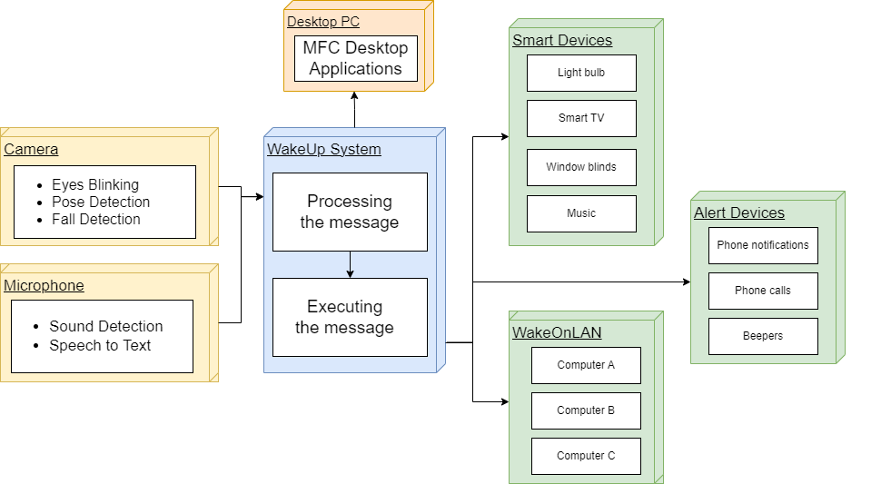

Overview of the Architecture
There are 3 key components in the architecture, namely the Triggers, Target Devices, WakeUp System with MFC Front-end. The role of the Triggers are to receive sound or visual input from patients and process the input to see if it matches a recognised action configured in its own environment variables. If this is the case, the trigger will send a request to the main WakeUp system, letting it know that such an action has been performed. The role of the WakeUp system, is then to process any incoming requests, both from the triggers and also the MFC Front-end. After processing the request it will either update its database or toggle one of the already registered target devices, depending on the request. The role of the MFC Front-end, which is a desktop application that can be run on Windows, is to allow a non-technical staff member to set the mappings between the triggers and target devices. Finally, the role of the Target Devices are to execute any actions which are prompted by the WakeUp system, such as waking up from a dormant state.
Triggers
The Matter WakeUp system features seven triggers, each tailored to detect particular movements or sounds from patients and subsequently communicate with the WakeUp system. These triggers include functions such as eyes blinking, audio classification, fall detection (upper body), fall detection (full body), morse vision, morse sound and whisper. For further details on each trigger, please refer to the "Triggers" page.
Targets
The WakeUp system maps trigger signals to target devices for action. It utilizes the Home Assistant API to control Matter devices locally, WakeOnLAN to wake up displays from a low-power state, and a custom Telegram API bot for alerts. For further details on each target, please refer to the "Targets" page.
WakeUp System
The WakeUp system's architecture revolves around a Python Flask server that interacts with Matter devices via the Home Assistant API, alerts mobile devices through the Telegram API, and wakes up displays using the WakeOnLAN Python package. Triggers detect patient actions and send requests to the server, which then maps the appropriate target device for action based on the trigger. This mapping is stored in a SQLAlchemy database. The system also integrates a ZeroMQ Client to ensure triggers have the correct configuration in real-time. Additionally, it provides daily statistics on target device usage and activated signals in JSON format. Scheduled jobs, managed by APScheduler, handle tasks like querying the Home Assistant API for daily device usage and sending periodic Telegram alerts.
MFC
The WakeUp system, developed in C++ with Microsoft Foundation Classes (MFC), ensures compliance with NHS regulations. Its GUI allows medical staff to manage users, devices, and signals, facilitating the addition of new patients, mapping triggers to target devices, and configuring actions. Additionally, staff can export system usage data for analysis, with the option to delete sensitive information for data privacy.